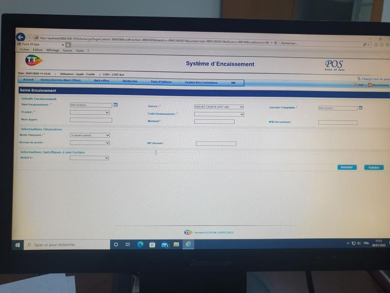
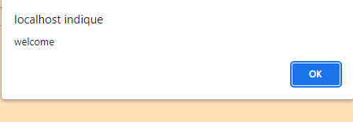
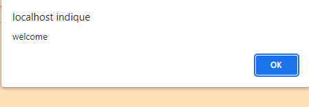

le système national d’encaissement SNE :
Lors de la visite de ce service j'étais informé tout d’abord sur le système national d’encaissement SNE :
Ce système est une Platform qui permet de réunir le travail à travers une connexion commune à un réseau
pour une exploitation d’une unique base de données.
Cette opération comporte plusieurs étapes :
- Réception des factures.
- Classer par date.
- Saisie manuelle (Par saisir numéro de téléphone, le montant, produit, code encaissement).
- Traitement des anomalies.
- Clôture du journal comptable.
- Clôture du mois comptable.
- Edition du certificat annuel d’encaissement

 
